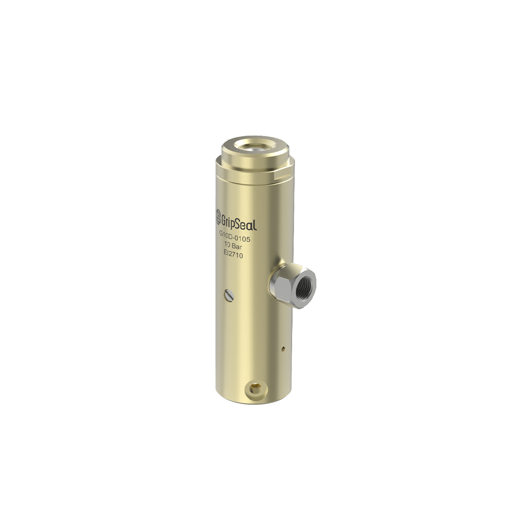
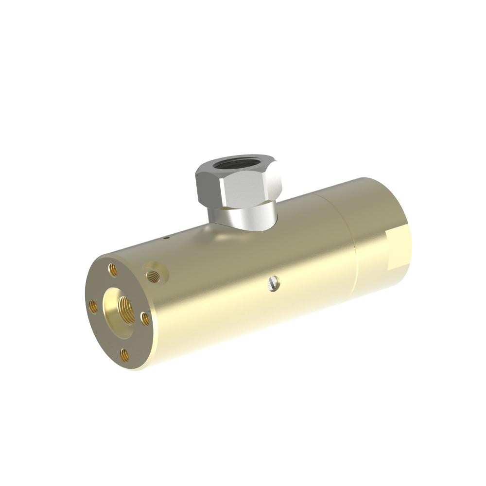
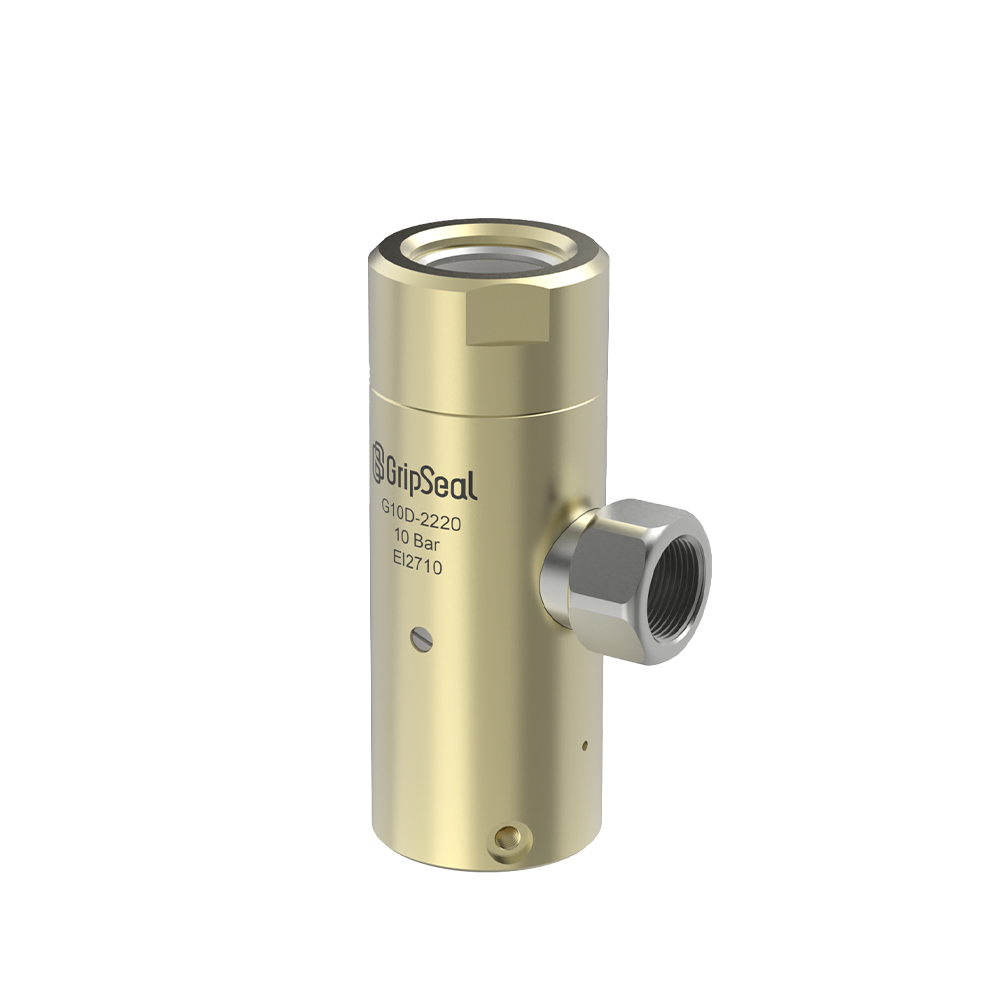

型号概览
快速密封ing for 冷却水 Pipe Interfaces
适用于重视连接速度、重复性和管端保护的冷却水管密封任务。
快速信息
Request G10D 选型 Help典型使用方向
当项目从冷却水管、冷却液进出口或重复生产测试接口开始时，可评估该路线。
型号详情页 for special cooling water pipe structures, compact layouts, and project-specific selection data。


适用于重视连接速度、重复性和管端保护的冷却水管密封任务。
当项目从冷却水管、冷却液进出口或重复生产测试接口开始时，可评估该路线。
产品参数
| 典型压力 | 真空 - 20 bar |
|---|---|
| 密封路线 | 冷却水管内径 / 外径密封 |
| 管径范围 | 按选型表确认 |
| 介质 | 水 / 水乙二醇 / 空气测试 |
| 主体材质 | 铝合金 / 不锈钢 |
| 密封材质 | NBR / EPDM / FKM |
| 温度范围 | -20 C - 120 C |

用于冷却水管端的重复密封，避免缓慢的螺纹连接操作。
Useful for production or bench tests where the same line must be connected many times。
可根据水、水乙二醇和其他冷却介质要求评估。
Exact model sizes and pipe ranges are confirmed after reviewing the interface drawing and test conditions。
选型表
| 型号 | 管径范围 | 压力 | 介质 | 操作方式 | 备注 |
|---|---|---|---|---|---|
| G10D-01 | 按图纸确认 | 真空 - 20 bar | 水 / 乙二醇 | 手动 | Confirm by interface drawing and project requirements |
| G10D-02 | 按图纸确认 | 真空 - 20 bar | 水 / 乙二醇 | 工装 | Confirm by interface drawing and project requirements |
Application cases and line-side photos can be reviewed with the project information。
For coolant line pressure and leak testing on thermal management assemblies。
For repeated connection on line-side test fixtures。
For service or maintenance points that need quick and clean reconnection。
For water-cooling or thermal management subsystems in industrial applications。
Compare nearby series inside this product branch before choosing the final model route。